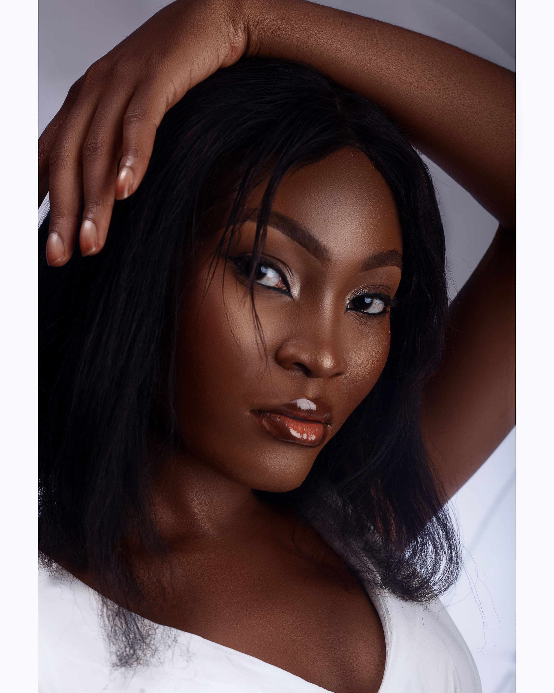
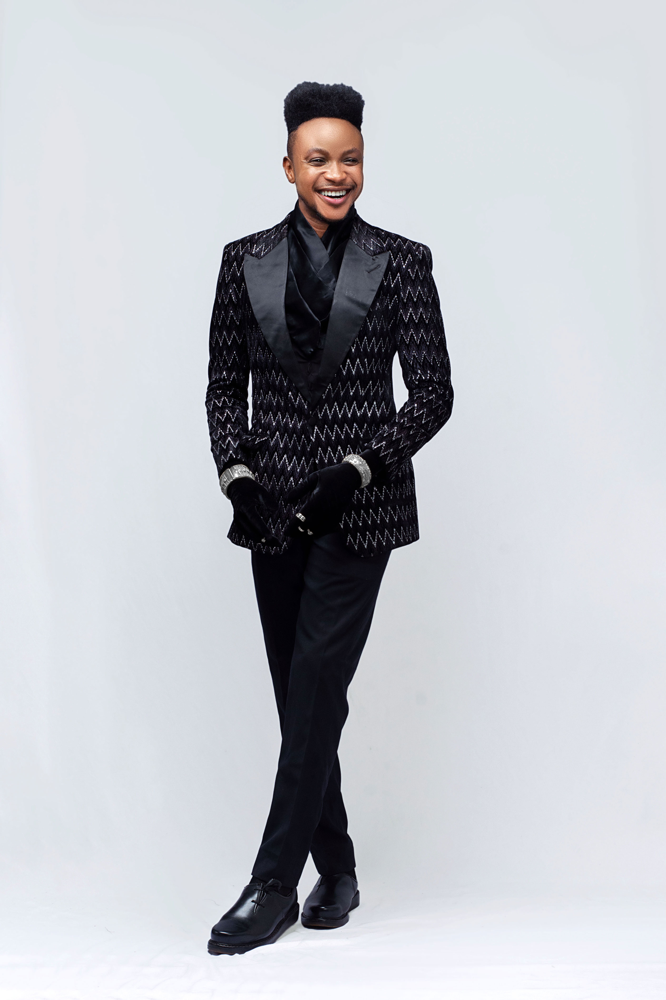
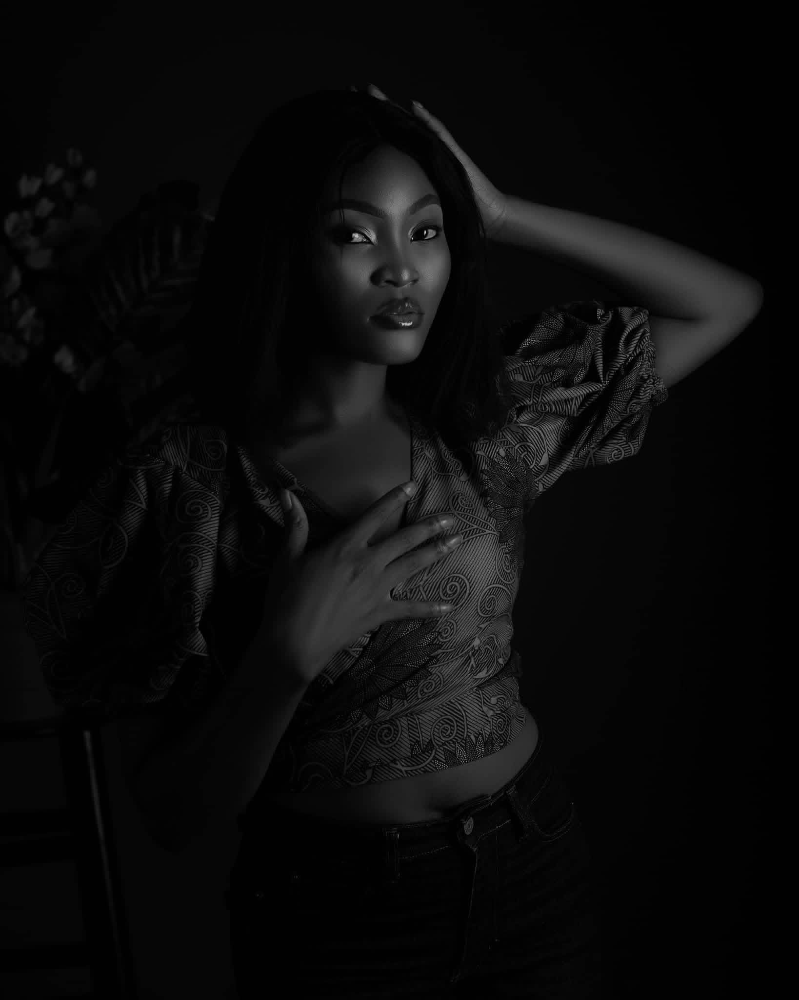

Story 01
Portraits
Open for bookings · Lagos, Nigeria & Worldwide
KAMEVA
Capturing the quiet moments, the raw emotion, and the beauty that lives between frames. Based in Lagos, available worldwide.


THE WORK
Selected Work
A curated collection of portraits, maternity milestones, traditional weddings, fashion editorials, and family celebrations. Select any photograph to view at full screen.

BEHIND THE LENS
Roselyn Abaa-Offor
“I believe every person carries a story worth telling. My work is about creating a space where you feel seen — and then freezing that moment in time.”
Roselyn Abaa-Offor is a passionate photographer and visual storyteller based in Lagos, Nigeria and available worldwide, dedicated to capturing moments with depth, emotion, and authenticity. Her work is rooted in the belief that every image should tell a story—one that feels real, timeless, and deeply human.
With a strong background in leadership and organization, Roselyn brings a unique blend of structure and creativity to her photography, approaching every shoot with intention, lighting, and refined composition.
Whether documenting intimate portraits, dynamic events, or lifestyle moments, Roselyn is known for creating a comfortable space that allows her subjects to be themselves—resulting in natural, powerful imagery that resonates.
Driven by a desire to continuously evolve, she is committed to refining her craft and delivering work that not only meets expectations but leaves a lasting impression.
- Photographer
- Roselyn Abaa-Offor
- Location & Reach
- Lagos, Nigeria · Available Worldwide
- Disciplines
- Portraits · Maternity · Weddings · Fashion · Family · Events
- Status
- Open for Bookings
SESSIONS
How We Can Create Together
Every session is tailored around your story, wardrobe, and comfort. Explore our core photography and videography offerings below.
ARTIST PHILOSOPHY
“Every person carries a story worth telling.”
More than photographs — honest moments preserved with intention, emotion and artistry.
Roselyn Abaa-Offor · Kameva Photography
BOOK A SESSION
Let’s Create Something Worth Remembering.
Tell me what you're planning and let's create photographs that feel honest, beautiful and entirely yours.